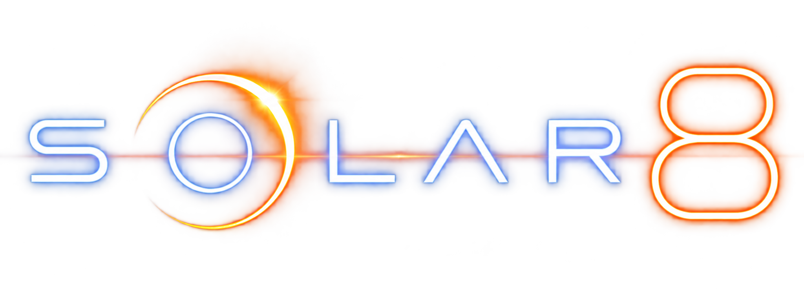

01 / SOUNDTRACK
Solar Brassquake
Меню и ангар

PROJECT BIBLEШесть треков из текущей рабочей версии игры. Полные оригиналы и короткие игровые петли.
При запуске нового трека предыдущий останавливается.
Меню и ангар
Брифинги и диалоги
Миссии Mercury и Mars; музыка остальных миссий по умолчанию
Миссии Venus
Миссии Earth
Отчёт об успешном завершении миссии
Треки предоставлены автором проекта. Названия отображены по именам файлов; назначение сверено с музыкальным контроллером игры 12.10.2026.
Игровые версии сокращены и зациклены для мобильной сборки. Полные оригиналы сохранены без изменений.